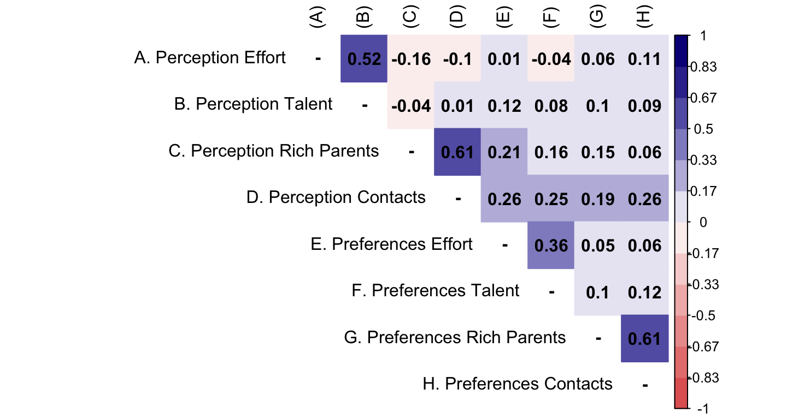

Meritocracia en la etapa escolar: una validación y aplicación de una escala sobre percepciones y preferencias de meritocracia
El aumento de la desigualdad económica y la concentración de la riqueza se ha asociado con una creciente preocupación por estudiar sus implicancias subjetivas. Las creencias de que las sociedades operan y distribuyen las recompensas en función de principios meritocráticos—donde las disparidades económicas se justifican por diferencias en esfuerzo y talento individual— han sido identificadas como uno los mecanismos claves para explicar la persistencia de las desigualdades. Ante los desafíos asociados con las diferentes conceptualizaciones y mediciones de la meritocracia, Castillo et al. (2023) proponen un marco conceptual y de medición para evaluar las percepciones y preferencias meritocráticas y no meritocráticas en contextos de encuestas. Este estudio pretende probar la validez y aplicabilidad de esta propuesta de escala en población escolar en Chile. A partir de los datos de la Encuesta Panel Educación y Meritocracia en sus olas de 2023 (N = 804) y 2024 (N = X) para estudiantes, estimamos análisis factoriales confirmatorios (CFA), pruebas de invariancia y modelos de ecuaciones estructurales. Los resultados preliminares indican que la escala presenta buenos indicadores de ajuste y que sus dimensiones se corresponden con el modelo conceptual multidimensional propuesto, con altas contribuciones factoriales de sus ítems. Con el análisis de invarianza encontramos evidencia que respalda la equivalencia y aplicabilidad de la escala en diferentes muestras medidas en dos puntos de tiempo. Adicionalmente, los modelos de ecuaciones estructurales muestran que la escala predice actitudes políticas en la manera esperada por la evidencia previa, sugiriendo su validez de criterio. Estos hallazgos contribuyen tanto al desarrollo de la medición de la meritocracia y la no meritocracia como a la investigación empírica que examina su relación con diversas actitudes políticas en la etapa escolar en Chile.

m2_cfa <- cfa(model = model_cfa,
data = db,
estimator = "DWLS",
ordered = T,
std.lv = F)
summary(m2_cfa, fit.measures = T, standardized = T, rsquare = T, modindices = T) lavaan 0.6.15 ended normally after 44 iterations
Estimator DWLS
Optimization method NLMINB
Number of model parameters 38
Number of observations 846
Model Test User Model:
Test statistic 40.288
Degrees of freedom 14
P-value (Chi-square) 0.000
Model Test Baseline Model:
Test statistic 2455.928
Degrees of freedom 28
P-value 0.000
User Model versus Baseline Model:
Comparative Fit Index (CFI) 0.989
Tucker-Lewis Index (TLI) 0.978
Root Mean Square Error of Approximation:
RMSEA 0.047
90 Percent confidence interval - lower 0.030
90 Percent confidence interval - upper 0.064
P-value H_0: RMSEA <= 0.050 0.579
P-value H_0: RMSEA >= 0.080 0.001
Standardized Root Mean Square Residual:
SRMR 0.038
Parameter Estimates:
Standard errors Standard
Information Expected
Information saturated (h1) model Unstructured
Latent Variables:
Estimate Std.Err z-value P(>|z|) Std.lv Std.all
perc_merit =~
perc_effort 1.000 0.870 0.870
perc_talent 0.692 0.218 3.171 0.002 0.602 0.602
perc_nmerit =~
perc_rch_prnts 1.000 0.649 0.649
perc_contact 1.452 0.194 7.501 0.000 0.943 0.943
pref_merit =~
pref_effort 1.000 0.605 0.605
pref_talent 0.977 0.152 6.425 0.000 0.591 0.591
pref_nmerit =~
pref_rch_prnts 1.000 0.738 0.738
pref_contact 1.129 0.187 6.047 0.000 0.833 0.833
Covariances:
Estimate Std.Err z-value P(>|z|) Std.lv Std.all
perc_merit ~~
perc_nmerit -0.075 0.019 -3.910 0.000 -0.133 -0.133
pref_merit 0.033 0.022 1.483 0.138 0.063 0.063
pref_nmerit 0.096 0.024 4.026 0.000 0.150 0.150
perc_nmerit ~~
pref_merit 0.181 0.027 6.697 0.000 0.461 0.461
pref_nmerit 0.133 0.022 6.018 0.000 0.277 0.277
pref_merit ~~
pref_nmerit 0.083 0.021 3.966 0.000 0.186 0.186
Intercepts:
Estimate Std.Err z-value P(>|z|) Std.lv Std.all
.perc_effort 0.000 0.000 0.000
.perc_talent 0.000 0.000 0.000
.perc_rch_prnts 0.000 0.000 0.000
.perc_contact 0.000 0.000 0.000
.pref_effort 0.000 0.000 0.000
.pref_talent 0.000 0.000 0.000
.pref_rch_prnts 0.000 0.000 0.000
.pref_contact 0.000 0.000 0.000
perc_merit 0.000 0.000 0.000
perc_nmerit 0.000 0.000 0.000
pref_merit 0.000 0.000 0.000
pref_nmerit 0.000 0.000 0.000
Thresholds:
Estimate Std.Err z-value P(>|z|) Std.lv Std.all
perc_effort|t1 -1.046 0.053 -19.780 0.000 -1.046 -1.046
perc_effort|t2 0.437 0.045 9.793 0.000 0.437 0.437
perc_effort|t3 1.562 0.069 22.672 0.000 1.562 1.562
perc_talent|t1 -0.977 0.051 -18.972 0.000 -0.977 -0.977
perc_talent|t2 0.625 0.046 13.495 0.000 0.625 0.625
perc_talent|t3 1.572 0.069 22.674 0.000 1.572 1.572
prc_rch_prnt|1 -0.301 0.044 -6.862 0.000 -0.301 -0.301
prc_rch_prnt|2 0.565 0.046 12.359 0.000 0.565 0.565
prc_rch_prnt|3 1.395 0.062 22.345 0.000 1.395 1.395
perc_contct|t1 -0.418 0.045 -9.386 0.000 -0.418 -0.418
perc_contct|t2 0.745 0.048 15.599 0.000 0.745 0.745
perc_contct|t3 1.615 0.071 22.659 0.000 1.615 1.615
pref_effort|t1 0.101 0.043 2.336 0.019 0.101 0.101
pref_effort|t2 1.172 0.056 21.002 0.000 1.172 1.172
pref_effort|t3 1.762 0.079 22.340 0.000 1.762 1.762
pref_talent|t1 -0.982 0.052 -19.031 0.000 -0.982 -0.982
pref_talent|t2 0.116 0.043 2.680 0.007 0.116 0.116
pref_talent|t3 1.427 0.064 22.452 0.000 1.427 1.427
prf_rch_prnt|1 -1.364 0.061 -22.222 0.000 -1.364 -1.364
prf_rch_prnt|2 0.110 0.043 2.542 0.011 0.110 0.110
prf_rch_prnt|3 1.306 0.060 21.936 0.000 1.306 1.306
pref_contct|t1 -1.115 0.054 -20.490 0.000 -1.115 -1.115
pref_contct|t2 0.276 0.044 6.314 0.000 0.276 0.276
pref_contct|t3 1.379 0.062 22.285 0.000 1.379 1.379
Variances:
Estimate Std.Err z-value P(>|z|) Std.lv Std.all
.perc_effort 0.244 0.244 0.244
.perc_talent 0.638 0.638 0.638
.perc_rch_prnts 0.579 0.579 0.579
.perc_contact 0.112 0.112 0.112
.pref_effort 0.634 0.634 0.634
.pref_talent 0.651 0.651 0.651
.pref_rch_prnts 0.456 0.456 0.456
.pref_contact 0.307 0.307 0.307
perc_merit 0.756 0.241 3.136 0.002 1.000 1.000
perc_nmerit 0.421 0.059 7.194 0.000 1.000 1.000
pref_merit 0.366 0.067 5.499 0.000 1.000 1.000
pref_nmerit 0.544 0.092 5.927 0.000 1.000 1.000
Scales y*:
Estimate Std.Err z-value P(>|z|) Std.lv Std.all
perc_effort 1.000 1.000 1.000
perc_talent 1.000 1.000 1.000
perc_rch_prnts 1.000 1.000 1.000
perc_contact 1.000 1.000 1.000
pref_effort 1.000 1.000 1.000
pref_talent 1.000 1.000 1.000
pref_rch_prnts 1.000 1.000 1.000
pref_contact 1.000 1.000 1.000
R-Square:
Estimate
perc_effort 0.756
perc_talent 0.362
perc_rch_prnts 0.421
perc_contact 0.888
pref_effort 0.366
pref_talent 0.349
pref_rch_prnts 0.544
pref_contact 0.693
Modification Indices:
lhs op rhs mi epc sepc.lv sepc.all
1 perc_merit =~ perc_rich_parents 8.780 -0.137 -0.119 -0.119
2 perc_merit =~ perc_contact 8.780 0.200 0.174 0.174
3 perc_merit =~ pref_effort 1.029 0.058 0.050 0.050
4 perc_merit =~ pref_talent 1.029 -0.057 -0.049 -0.049
5 perc_merit =~ pref_rich_parents 0.107 -0.018 -0.015 -0.015
6 perc_merit =~ pref_contact 0.107 0.020 0.017 0.017
7 perc_nmerit =~ perc_effort 15.076 -0.328 -0.213 -0.213
8 perc_nmerit =~ perc_talent 15.076 0.227 0.147 0.147
9 perc_nmerit =~ pref_effort 0.280 -0.143 -0.093 -0.093
10 perc_nmerit =~ pref_talent 0.280 0.139 0.090 0.090
11 perc_nmerit =~ pref_rich_parents 0.132 0.042 0.027 0.027
12 perc_nmerit =~ pref_contact 0.132 -0.047 -0.031 -0.031
13 pref_merit =~ perc_effort 19.310 -0.466 -0.282 -0.282
14 pref_merit =~ perc_talent 19.310 0.322 0.195 0.195
15 pref_merit =~ perc_rich_parents 0.305 -0.088 -0.053 -0.053
16 pref_merit =~ perc_contact 0.305 0.128 0.077 0.077
17 pref_merit =~ pref_rich_parents 0.021 -0.020 -0.012 -0.012
18 pref_merit =~ pref_contact 0.021 0.023 0.014 0.014
19 pref_nmerit =~ perc_effort 7.210 -0.235 -0.173 -0.173
20 pref_nmerit =~ perc_talent 7.210 0.163 0.120 0.120
21 pref_nmerit =~ perc_rich_parents 7.017 -0.182 -0.134 -0.134
22 pref_nmerit =~ perc_contact 7.017 0.265 0.195 0.195
23 pref_nmerit =~ pref_effort 2.385 -0.123 -0.091 -0.091
24 pref_nmerit =~ pref_talent 2.385 0.121 0.089 0.089
25 perc_effort ~~ perc_rich_parents 10.934 -0.134 -0.134 -0.357
26 perc_effort ~~ perc_contact 0.224 0.025 0.025 0.154
27 perc_effort ~~ pref_effort 0.356 -0.029 -0.029 -0.073
28 perc_effort ~~ pref_talent 7.685 -0.124 -0.124 -0.312
29 perc_effort ~~ pref_rich_parents 1.702 -0.063 -0.063 -0.189
30 perc_effort ~~ pref_contact 0.005 -0.004 -0.004 -0.013
31 perc_talent ~~ perc_rich_parents 0.064 0.011 0.011 0.018
32 perc_talent ~~ perc_contact 9.609 0.149 0.149 0.559
33 perc_talent ~~ pref_effort 7.266 0.117 0.117 0.184
34 perc_talent ~~ pref_talent 3.092 0.070 0.070 0.109
35 perc_talent ~~ pref_rich_parents 1.652 0.056 0.056 0.105
36 perc_talent ~~ pref_contact 0.236 0.022 0.022 0.051
37 perc_rich_parents ~~ pref_effort 1.143 0.058 0.058 0.095
38 perc_rich_parents ~~ pref_talent 0.217 -0.024 -0.024 -0.039
39 perc_rich_parents ~~ pref_rich_parents 0.597 0.035 0.035 0.068
40 perc_rich_parents ~~ pref_contact 9.984 -0.149 -0.149 -0.353
41 perc_contact ~~ pref_effort 0.062 -0.018 -0.018 -0.068
42 perc_contact ~~ pref_talent 0.083 -0.020 -0.020 -0.073
43 perc_contact ~~ pref_rich_parents 0.094 -0.017 -0.017 -0.077
44 perc_contact ~~ pref_contact 5.732 0.141 0.141 0.763
45 pref_effort ~~ pref_rich_parents 1.032 -0.049 -0.049 -0.092
46 pref_effort ~~ pref_contact 1.063 -0.051 -0.051 -0.116
47 pref_talent ~~ pref_rich_parents 0.385 0.027 0.027 0.049
48 pref_talent ~~ pref_contact 1.462 0.053 0.053 0.119
sepc.nox
1 -0.119
2 0.174
3 0.050
4 -0.049
5 -0.015
6 0.017
7 -0.213
8 0.147
9 -0.093
10 0.090
11 0.027
12 -0.031
13 -0.282
14 0.195
15 -0.053
16 0.077
17 -0.012
18 0.014
19 -0.173
20 0.120
21 -0.134
22 0.195
23 -0.091
24 0.089
25 -0.357
26 0.154
27 -0.073
28 -0.312
29 -0.189
30 -0.013
31 0.018
32 0.559
33 0.184
34 0.109
35 0.105
36 0.051
37 0.095
38 -0.039
39 0.068
40 -0.353
41 -0.068
42 -0.073
43 -0.077
44 0.763
45 -0.092
46 -0.116
47 0.049
48 0.119